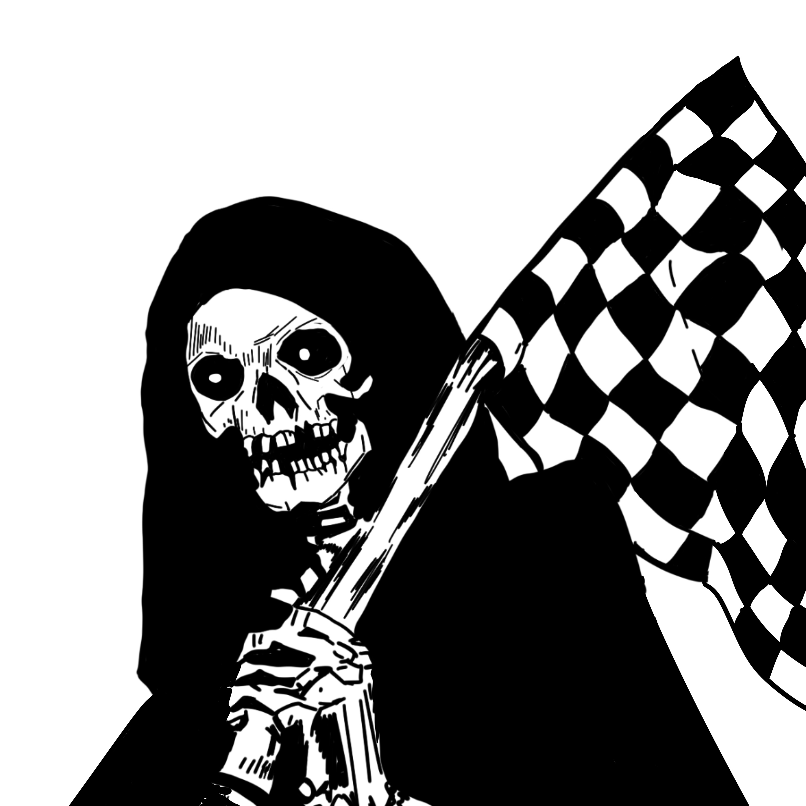

Servicios Especializados
¿A qué nos dedicamos?
 <-- CONTENIDO MOBILE (Instagram Style Footer) -->
<-- CONTENIDO MOBILE (Instagram Style Footer) -->

denji_moto_repairEspecialidad Motos
Servicio técnico Custom, Touring y Calle en terreno. Afinamiento, frenos, transmisión y electricidad. Royal Enfield, Harley, Honda y más.

denji_bike_repair
Mecánica Bicis
Mantenimiento profesional de Gravel, Fixie, Ruta y MTB en terreno. Ajuste de casquetes Shimano y frenos de disco técnicos.